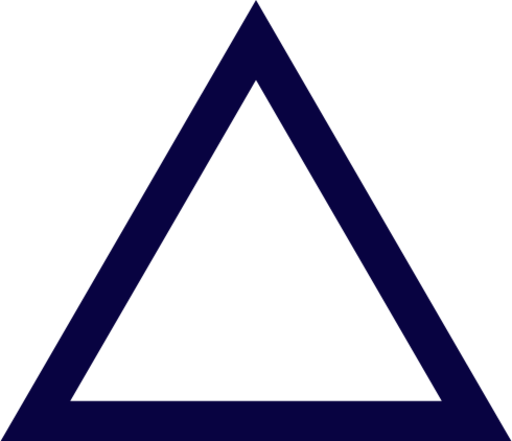

About Me
PROJECTS
Currently in the works. Using merriam webster's spanish-english dictionary api and a google
translate api, I provide translations and basic dictionary information for a user request. Sentences
translated from english into spanish come with a pop up dictionary feature when the user hovers over
each word of the sentence. View this project on github.
Term paper for Politics of Climate Change class, completed in Fall 2023.
Conducted a thorough literature review and synthesizing key findings into a comprehensive analysis
of the cultural, technological and economic implications of the emerging sustainable plastics
movement. Provided recommendations for future policies and political approaches. Access paper
here.
Term paper for Latin American Cultures class, completed in Fall 2024. Access paper
here.
Term paper for a Global Cultures class, completed in Fall 2024. Access paper
here.
MORE PROJECTS
EXPERIENCE
Intern
Assisting the Education School Gardens team with organizational tasks, including preparing
starter-garden packages and other kits for school programs. Assessing efficacy of programs and
resources, using various python libraries for data analysis and visualization.
Selected for a
year-long NYU program partnering with GrowNYC to promote awareness of social
issues and service opportunities.
Use various python libraries to conduct data analysis and visualization of NYC public school
garden programs and resources to assess the impact of GrowNYC in promoting accessible gardening
opportunities.
Conduct data cleaning, parsing through and standardizing columns for addresses and school names.
Identify missing data and duplicate entries, plotting with GPS coordinates to detect overlooked
regions.
Copy Chief
Editing content for accuracy, clarity and consistency, following AP style guidelines.
Creating content for publication, conducting interviews and preliminary research.
Managing copy editor work and workload, problem solving as discrepancies arise.
Conducting interviews and oversee the hiring process for deputies and copy editors.
Researcher
Conducting historical research relating to the people of the town of West Windsor.
Includes working with microfiche in the New Jersey State Archives, using online databases
incl. Ancestry.com to view and transcribe governmental records such as deeds, wills, and
census records.
SERVICE
Liberal Studies Service Ambassador
Selected for a year-long NYU program partnering with GrowNYC to promote awareness of social
issues and service opportunities.
Lead Instructor
Organizing and leading weekly 45-minute environmental lessons in a first-grade classroom at a
NYC public school.
CONTACT
Feel free to reach out! I'm open to any questions or opportunities.